Enhanced Pulse Width Modulation (EPWM)#
Overview#
The C2000 high-performance control peripherals are an integral component for all digital control systems. This module covers the Enhanced Pulse Width Modulation (EPWM) control peripheral.
What is pulse width modulation?#
Pulse width modulation (PWM) is a general method for representing an analog signal with a digital approximation. A PWM signal consists of a sequence of variable width, constant amplitude pulses which contain the same total energy as the original analog signal.
This property is valuable in digital motor control as sinusoidal current (energy) can be delivered to the motor using PWM signals applied to a power converter. Although energy is input to the motor in discrete packets using PWM, the mechanical inertia of the rotor acts as a smoothing filter. Dynamic motor motion is therefore similar to having applied the sinusoidal currents directly.
PWM is a scheme to represent a signal as a sequence of pulses with the following characteristics: * Fixed carrier frequency * Fixed pulse amplitude * Pulse width that is proportional to instantaneous signal amplitude * PWM energy ~ original signal energy
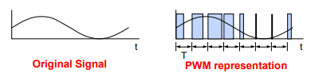
Why use PWM with power-switching devices?#
Power switching devices can be difficult to control when operating in the proportional region, but are easy to control in the saturation and cutoff regions. Since PWM is a digital signal by nature and easy for an MCU to generate, it is ideal for use with power switching devices. Essentially, PWM performs a DAC function, where the duty cycle is equivalent to the DAC analog amplitude value.
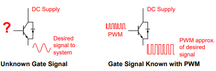
The EPWM Module#
EPWM modules are highly programmable, extremely flexible, and easy to use, while being capable of generating complex pulse width waveforms with minimal CPU overhead or intervention. Each EPWM module is identical with two PWM outputs, EPWMxA and EPWMxB. Multiple EPWM modules can be synchronized to operate together as needed within a system (please refer to your device’s documentation on the specific order of the EPWM module synchronization scheme). The generated PWM waveforms are available as outputs on GPIO pins on the microcontroller.
The EPWM module can also interact closely with other peripherals. For example, EPWM’s can trigger ADC start-of-conversion (SOC) signals, and EPWM’s can generate interrupts to the interrupt controller block. External signals can also be used to alter an EPWM output, if needed, as well as generate interrupts. Additionally, the outputs of comparators on the device can be used as inputs to the EPWM by leveraging connectivity through the EPWM X-BAR module.
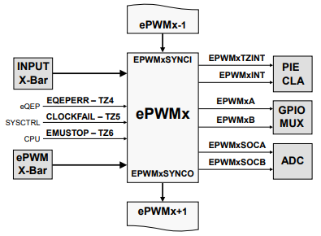
EPWM Submodules#
Each EPWM module consists of eight main submodules:
Time-Base
Counter-Compare
Action-Qualifier
Dead-Band Generator
PWM Chopper
Trip-Zone
Digital-Compare
Event-Trigger
We will now go over the function and purpose of each submodule.
EPWM Time-Base Submodule#
The time-base submodule primarily consists of a 16-bit counter, along with built-in synchronization logic to allow multiple EPWM modules to work together as a single system.
Clocking#
The clock used for the EPWM counter is originally sourced from a device’s system clock. A configurable clock divider divides down the system clock to generate the EPWM clock (EPWMCLK). EPWM clock pre-scaler values can then be used to further divide down the EPWM clock for the EPWM counter and a EPWM time-base period register. The counter and the time-base period value control the frequency and period of the generated EPWM waveforms.
Pre-scaler Calculations:
Time-Base Clock
TBCLK= EPWMCLK / (HSPCLKDIV * CLKDIV)Clock Pre-scaler = HSPCLKDIV * CLKDIV
Shadow Registers#
Many EPWM registers, such as the time-base period register, also have shadow registers. Shadow registers act like a buffer to allow register updates to be synchronized with the EPWM counter or a specific (configurable) event and avoid corruption or spurious operation from the register being modified asynchronously by software.
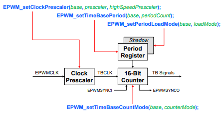
The time-base counter can operates in one of three modes:up-count,down-count, and up-down-count. Note that the up-count and down-count modes are used to generate asymmetrical waveforms, and the up-down-count mode is used to generate symmetrical waveforms.
Up-Count Mode
The counter starts counting from zero and increments until it reaches the time-base period register value, then the counter resets to zero and the count sequence starts again.
Down-Count Mode
The counter starts counting from the time-base period register value and decrements until it reaches zero, then the counter resets to the period value and the down-count sequence starts again.
Up-Down-Count Mode
The counter starts counting from zero and increments until it reaches the time-base period register value, then the counter decrements until it reaches zero and the count sequence repeats.
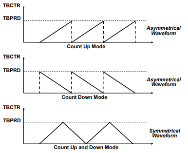
Synchronization#
Synchronization allows multiple EPWM modules to work together as a single system. The synchronization is based on an input signal called the SYNC-IN signal. Additionally, the waveform can be phase-shifted or offset as seen in the figure below.
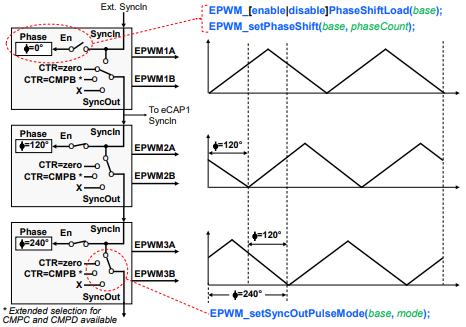
EPWM Counter-Compare Submodule#
The counter-compare submodule continuously compares the time-base counter value to its counter-compare register values (CMPA, CMPB, CMPC, CMPD) and recognizes if the time-base counter matches a counter-compare value.
Compare Events#
When a match occurs (counter = CMPx), this is known as a compare event. Compare events are used by the EPWM action-qualifier and event-trigger submodules to influence EPWM outputs and interact with other peripherals. The below EPWM Counter-Compare Event Waveform diagram shows compare matches that are used by the action-qualifier submodule. Note that for up-count and down-count modes, a counter-compare match (counter = CMPx) can occur only once per cycle; however, for up-down-count mode, a counter match can occur twice per cycle since there can be a match on the up-count and another match on the down-count.
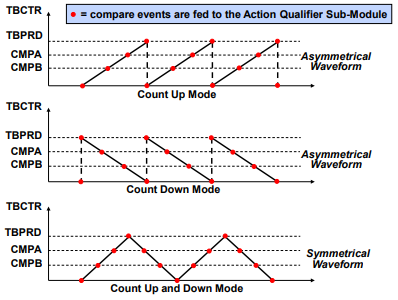
Shadowing#
The counter compare registers also have shadow registers to help prevent corruption or glitches during the active PWM cycles.
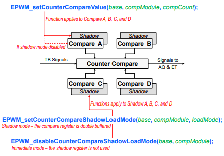
EPWM Action-Qualifier Submodule#
The action-qualifier submodule is responsible for constructing the shape of PWM waveforms. This submodule utilizes compare events from the time-base and counter-compare submodules (above) to performing actions on an EPWM modules two output channels (EPWMxA and EPWMxB). These first three submodules (time-base, counter-compare, and action-qualifier) are the key submodules needed to generate a basic PWM waveform.
Action-Qualifier Actions#
The action-qualifier submodule can perform the following actions on an EPWM signal:
Set PWM output high
Clear PWM output low
Toggle PWM output (if high, toggle low; if low, toggle high)
Do nothing to PWM output
These actions are performed when a specific (configurable) event occurs as demonstrated in the table below.
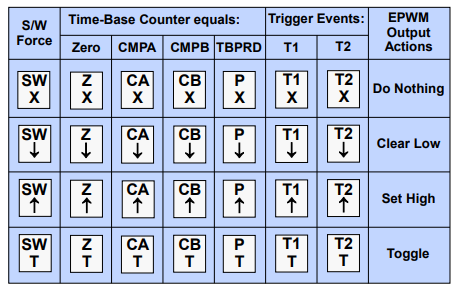
T1/T2 Event Sources = DCAEVT1, DCAEVT2, DCBEVT1, DCBEVT2, TZ1, TZ2, TZ3, EPWMxSYNCIN
A match event can occur when the time-base counter is equal to the time-base period value, the time-base counter is equal to zero, the time-base counter equals CMPA, or the time-base counter equals CMPB. For a Trigger event (T1 and T2), the action occurs based on a comparator, trip, or sync signal. These event actions can also be specific to the counting direction of the time-base counter (counting up versus counting down).
Note that zero and time-base period match events are fixed in time, whereas CMPA and CMPB actions can be adjusted in times by programming the CMPA and CMPB registers values. Actions are configured independently for each EPWM channel’s output using shadowed registers, and any or all events can be configured to generate actions on either channel’s output. Additionally, an action on any EPWM output can be forced using software.
Action-Qualifier Examples#
The below figures showcase how the action-qualifier module can be used with the compare match events to construct EPWM waveforms. Notice that the outputs for channel A and channel B are completely independent.
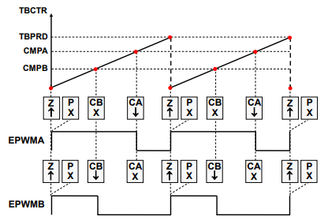
In the figure above, the EPWMA output is set high on a zero match and cleared low on a compare A (CMPA) match. The EPWMB output is set high on a zero match and cleared low on a compare B (CMPB) match.
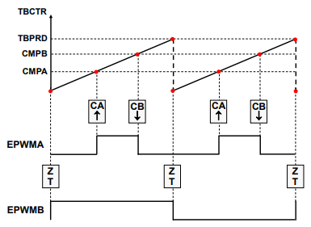
In the figure above, the EPWMA output is set high on a compare A (CMPA) match and cleared low on a compare B (CMPB) match, while the EPWMB output is toggled on a zero match.
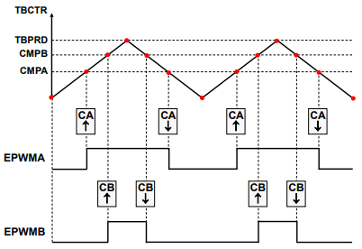
In the figure above, there are now different output actions on the up-count and down-count using a single counter-compare register. The EPWMA and EPWMB outputs are set high on a compare A and B up-count match (CMPAU and CMPBU) and cleared low on a compare A and B down-count match (CMPAD and CMPBD).
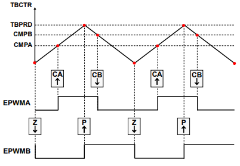
In the final figure above, there are again different output actions used on the up-count and down-count, the EPWMA output is set high on a compare A up-count match (CMPAU) and cleared low on a compare B down-count match (CMPBD). The EPWMB output is cleared low on a zero match and set high on a time-base period match.
EPWM Waveform Generation#
There are several important parameters that must be accounted for when generating a PWM waveform for your application. This includes PWM frequency, duty cycle, and resolution.
Switching Frequency#
The PWM frequency (also called the carrier frequency) is determined by the time-base period value and the frequency of the EPWM clock. To determine your time-base period value, use the below calculations. Recall that up-count and down-count modes produce asymmetric PWMs while up-down-count produces a symmetric PWM.
Asymmetric PWM
Time-Base Period = (Tpwm / TTBCLK) - 1
Tpwm = switching period
TTBCLK = timer period
Symmetric PWM
Time-Base Period = Tpwm / (2 * TTBCLK)
Tpwm = switching period
TTBCLK = timer period
Notice that in the symmetric case, the period value is about half that of the asymmetric case. This is because for up-down-count mode, the timer period is twice the value specified in the time-base period register (i.e. the timer counts up to the period register value and then counts back down).
Duty Cycle#
The duty cycle is typically a percentage value that describes how long a PWM output is high (also referred to as on-time) For example, a 50% duty cycle indicates the PWM is high (on) for 50% of a period and low (off) for 50% of a period. In simple PWM waveforms, a PWM output will typically start in a low state and be set high on a counter-compare match event. In this case, duty cycle calculations are used to determine what counter-compare value is needed. The counter-compare value can be calculated as follows: Asymmetric PWM
CMPx= (100% - duty cycle)∗TBPRDSymmetric PWMCMPx= (100% - duty cycle)∗TBPRDNote that for symmetric PWM, the desired duty cycle is only achieved if the compare registers contain the computed value for both the up-count compare and down-count compare portions of the time-base period.
Resolution#
The resolution of a PWM signal can be calculated after the time-base period register value is determined. The function resolution uses the largest power of 2 that is less than (or close to) the time-base period value. Examples are listed below: Asymmetric PWM
Asymmetric PWM time-base period value = 1000
This PWM has approximately 10-bit resolution since 2^10 = 1024 (this is approximately equal to 1000) Symmetric PWM
Symmetric time-base period value was 500
This PWM has approximately 9-bit resolution since 2^9 = 512 (this is approximately equal to 500)
EPWM Calculations Examples#
Determine the time-base period (TBPRD) and counter-compare A (CMPA) values needed to produce the following EPWM signal (assuming TBCLK = 100MHz):
Frequency = 100kHz
Duty cycle = 25%
Symmetric PWM Calculations
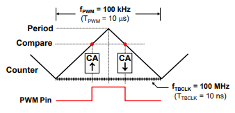
TBPRD = .5 * (FTBCLK/FPWM) = .5 * (100 MHz / 100 kHz) = 500
CMPA = (100% - duty cycle) TBPRD = 0.75 * 500 = 375
Asymmetric PWM Calculations
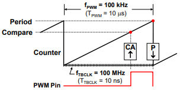
TBPRD = (FTBCLK/FPWM) - 1 = (100 MHz / 100 kHz) - 1 = 999
CMPA = (100% - duty cycle) (TBPRD +1) - 1 = 0.75 * (999 + 1) - 1 = 749
EPWM Dead-Band Submodule#
The dead-band submodule provides a way to delay the switching of the PWM (high to low or low to high). By delaying the transition of PWM signals, you can allow time for the PWM gates to turn off and prevent a short circuit. We will refer to the PWM switching in terms of rising edges (low to high) and falling edges (high to low).
The dead-band submodule supports independently programmable rising-edge and falling-edge delays with various options for generating the appropriate signal outputs on EPWMxA and EPWMxB.
Why use Dead-Band?#
EPWM outputs switch by flipping transistor gates on and off. However, transistor gates turn on faster than they shut off! If two gates are on at the same time (even momentarily), this produces a path from supply rail to ground and yields a short circuit. The dead-band submodule can alleviate this issue.
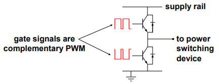
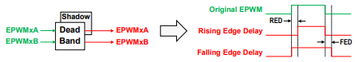
Dead-band control provides a convenient means of combating current shoot-through problems in a power converter. Shoot-through occurs when both the upper and lower gates in the same phase of a power converter are open simultaneously (both gates “on”). This condition shorts the power supply and results in a large current draw. Shoot-through problems occur because transistors open faster than they close, and because high-side and low-side power converter gates are typically switched in a complimentary fashion. Although the duration of the shoot-through current path is finite during PWM cycling, (i.e. the closing gate will eventually shut), even brief periods of a short circuit condition can produce excessive heating and over stress the power converter and power supply.
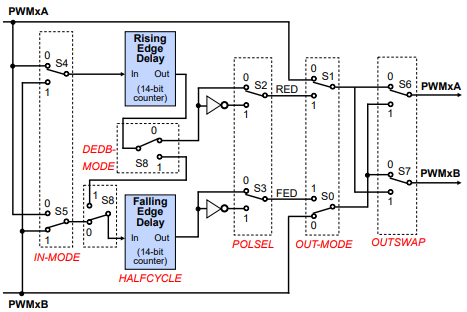
Preventing Short-Circuits#
There are two basic approaches exist for controlling shoot-through:
Modify the transistors
The opening time of the transistor gate must be increased so that it (slightly) exceeds the closing time. One way to accomplish this is by adding a cluster of passive components such as resistors and diodes in series with the transistor gate, as shown in the image below.
The resistor acts to limit the current rise rate towards the gate during transistor opening, thus increasing the opening time. When closing the transistor however, current flows unimpeded from the gate via the by-pass diode and closing time is therefore not affected. While this passive approach offers an inexpensive solution that is independent of the control microprocessor, it is imprecise, the component parameters must be individually tailored to the power converter, and it cannot adapt to changing system conditions.
Modify the PWM gate signals controlling the transistors
This approach separates transitions on complimentary PWM signals with a fixed period of time. This is called dead-band. While it is possible to perform software implementation of dead-band, the C2000 MCUs offer on-chip hardware for this purpose that requires no additional CPU overhead. Compared to the passive approach, dead-band offers more precise control of gate timing requirements. In addition, the dead time is typically specified with a single program variable that is easily changed for different power converters or adapted on-line.
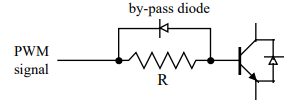
EPWM Chopper Submodule#
The PWM chopper submodule is used with pulse transformer-based gate drives to control the power switching devices. This submodule uses a high-frequency carrier signal together with the PWM waveform that is generated by the previous submodules (time-base, counter-compare, action-qualifier, and dead-band).
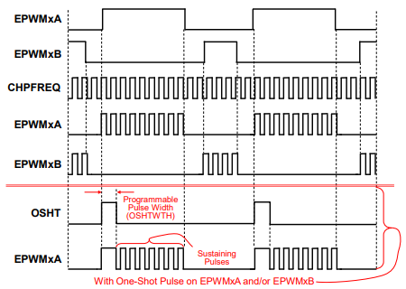
Shown in the figure above, a high-frequency carrier signal (CHPFREQ) is AND-ed with the base EPWM signals to produce final “chopped” outputs. Additionally, this submodule provides an option to include a larger, one-shot (OSHT) pulse width before the sustaining pulses.
EPWM Trip-Zone Submodule#
The trip zone and digital compare submodules provide a protection mechanism to protect the output pins from abnormalities, such as over-voltage, over-current, and excessive temperature rise.
Using the trip-zone is the quickest way to change a PWM output. The trip-zone submodule utilizes a fast, clock-independent logic mechanism to quickly handle fault conditions by forcing the EPWMxA and EPWMxB outputs to a safe, configurable state (such as high, low, or high-impedance). Due to its speed and hardware connection, the trip-zone can be used when interrupts (ISR software) may not be quick enough to protect the hardware in response to over-current conditions or short-circuits.
The trip-zone supports two types of trips
One-shot (OSHT) trips for major short circuits or over current conditions
Cycle-by-cycle (CBC) trips for current limiting operation
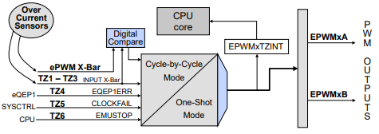
Trip-Zone Signals#
Trip-zone signals (TZ1-TZ6) can come from several sources. The trip-zone signals are typically as follows:
TZ1-TZ3: Externally from any GPIO pin. A specific GPIO signal can be routed to the EPWM Trip Zone using the INPUT X-BAR Module
TZ4: Internally from an inverted eQEP error signal (TZ4)
TZ5: Internally from system clock failure (TZ5)
TZ6: Internally from an emulation stop output from the CPU (TZ6).
Additionally, numerous trip-zone source signals can be generated from the digital-compare subsystem.
The power drive protection is a safety feature that is provided for the safe operation of systems such as power converters and motor drives. It can be used to inform the monitoring program of motor drive abnormalities such as over-voltage, over-current, and excessive temperature rise. If the power drive protection interrupt is unmasked, the PWM output pins will be put in a safe state immediately after the pin is driven low. An interrupt will also be generated.
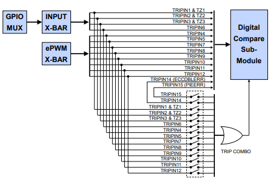
The digital-compare submodule receives its trip signals from the INPUT X-BAR and EPWM XBAR modules.
EPWM X-BAR#
The EPWM X-BAR is used to route various internal and external signals to the ePWM modules. Eight trip signals from the ePWM X-BAR are routed to all of the ePWM modules.
The EPWM X-BAR architecture block diagram shown below is replicated 8 times. The EPWM XBAR can select a single signal or logically OR up to 32 signals. The table in the figure defines the various trip sources that can be multiplexed to the trip-zone and digital compare submodules.
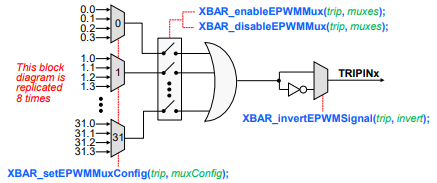
EPWM Digital-Compare Submodule#
The digital-compare submodule, like the trip-zone, can also help protect the output pins from abnormalities, such as over-voltage, over-current, and excessive temperature rise. This submodule compares signals external to the EPWM module, such as a signal from the CMPSS analog comparators, to directly generate PWM digital-compare events or actions. These digital-compare events or actions can then used by the trip-zone, time-base, and event-trigger submodules to do the following:
Trip the EPWM
Generate a trip interrupt
Sync the EPWM
Generate an ADC start of conversion
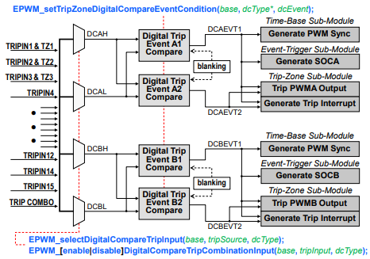
You can also use the digital-compare submodule ‘Blanking’ functionality to temporarily disable PWM actions for a period of time to eliminate noise effects.
Digital-Compare Events#
A digital-compare event is generated when one or more of its selected inputs are either high or low. The inputs to the digital-compare submodule are sourced from:
INPUT X-BAR
EPWM X-BAR
Trip-zone input pins
To use the digital-compare events, the user selects the input for each signal (DCAH, DCAL, DCBH, DCBL) and the state of each signal that will trigger each compare.
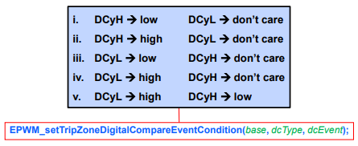
Note that each EPWM channel (A and B) uses its corresponding DCyH/L inputs (y = A or B)
EPWM Event-Trigger Submodule#
The event-trigger submodule can use the events generated by the time-base, counter-compare, and digital-compare submodules to trigger two types of actions:
Generate an interrupt to the CPU
Generate a start-of-conversion (SOC) pulse to the ADC
The event-trigger submodule also incorporates pre-scaling logic to issue an interrupt request or ADC SOC on every event or up to every fifteenth event.
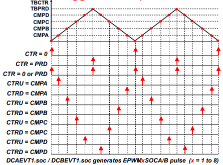
These event triggers can occur at a number of configurable time such as when the time-base counter equals zero, period, zero or period, or on the up-count or down-count match of a counter-compare value (CMPx). The digital-compare subsystem can also be used to generate an ADC SOC based on one or more compare events. Notice counter-up and counter-down triggers are independent and separate.
Type-5 EPWM#
Type-5 EPWM Features#
Generation of complex PWM waveforms (EPWM XCMP Mode)
Outputs can follow trip signals, constant high/low, do nothing (EPWM Diode Emulation Mode)
On a falling edge of PWM, dead band gets applied to another PWM output (EPWM Minimum Dead-Band + Illegal Combination Submodule)
Edge detection of PWM signal within a defined window (EPWM Event Detection)
EPWM XCMP Mode#
Note that if this mode is not enabled, Type-5 EPWM will simply behave the same as Type-4 EPWM.
Why use XCMP Mode?#
Extended Counter Compare Mode or XCMP Mode is a Type-5 EPWM feature that can be enabled on top of normal PWM configuration to allow more configurability for PWM waveform generation.
The concepts of this feature will be similar to what are in Counter-Compare submodule, Time-Base submodule, and Action Qualifier submodule with additional registers shown in the figure below. The time-base, counter compare, and action qualifier registers will have additional three sets of shadow registers.
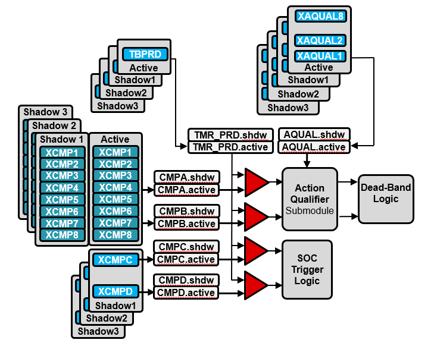
Instead of generating a single pulse within a single PWM period, generation of up to a max of 4 pulses within a single PWM period is possible.
CMPA and CMPB will have two options to allocate extended compare registers (XCMP1-8) one of two ways.
Allocate all XCMP1-8 to CMPA
Allocate XCMP1-4 to CMPA and XCMP5-8 to CMPB
The next figure will show the configuration when PWMA is given XCMP1-4, and PWMB given XCMP5-8.
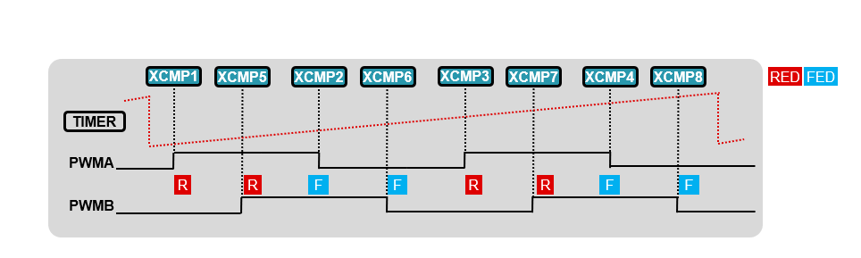
When XCMP mode is enabled, the counter direction can only be in up-count mode. The above event waveform diagram shows extended counter compare matches which are fed into action qualifer.
In the below figure, there are also three shadow register sets for each extended compare register, extended action qualifer register, and extended time base period. At the end of every period, the shadow register set is loaded to the active registers to generate a new waveform.
XCMP Loading Mechanism#
Loading from shadow to active can be configured in two ways:
Load Once
Load Multiple
Load once follows the same as type4, however there are three shadow register sets to load once from. The additional configurability is to select which shadow register set to load from first. Load multiple allows configurability to cycle through the shadow registers depending on how many shadow register sets are required. There are 4 configurations with load multiple in using the shadow register sets. The four possible load multiple schemes can be using only active register, shadow register 1, shadow register 1 and 2, or from all three shadow registers. If choosing all three shadow register, load multiple will start with shadow register 3 then load shadow register 2 then shadow register 1 on the next time-base counter equals to zero events. Once load multiple has cycled through all shadow register sets, load multiple will not cycle through the shadow register sets again until the load start bit is enabled again.
Note: There only are allowable repetition for shadow buffer set 2 and 3.
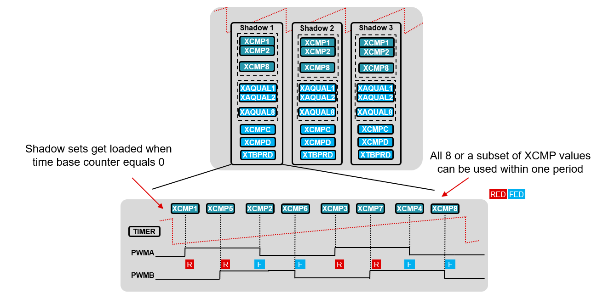
EPWM Diode Emulation Mode#
Diode emulation is used in conjunction with CMPSS module to drive the EPWM outputs to a certain state when the CMPSS sends out trip signal. The outputs from the trip zone will be sent to the Diode Emulation block.
Features of the diode emulation include#
Ability to send out a trip signal (DEMONTRIP) if the diode emulation mode is active for more than an allowable amount time.
Ability to force the PWM outputs to be same as trip signals, low or high.
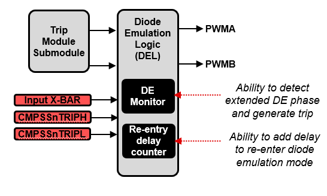
In the above figure inputs to the diode emulation block come from the CMPSS and input x-bar. The trip zone submodule’s outputs are also routed through this block. Diode emulation can be disabled to carry through the trip zone module’s output. The below waveform is to demonstrate a common use case for this feature which is current detection. The red signal can represent current in a system. The CMPSS will configure the original DACVAL for high and low thresholds. Diode emulation support within CMPSS, will allow configurability for setting another pair of DACVAL thresholds if the ePWM module enters diode emulation.
Since the diode emulation module takes input signal from CMPSSnTRIPH and CMPSSnTRIPL, only when the current goes past the original CMPSS threshold the diode emulation sets the DACVAL_H2 and DACVAL_L2. During this new threshold region, the PWM outputs will change accordinly to the PWM’s diode emulation set outputs and diode emulation mode will be active until the current resumes normal operation. Once current is within normal operating regions, the CMPSS resumes its original DACVAL thresholds and PWM outputs will resume.
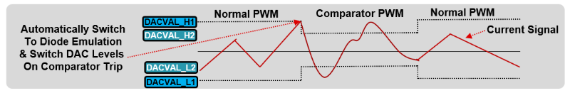
First the DEACTIVE flag is set to high because a TRIPH or TRIPL event has occurred. Once in diode emulation mode, EPWMxA_DE is configured to follow TRIPL, and EPWMxB_DE is configured to follow TRIPH. The outputs will continue to follow TRIPH/L until diode emulation mode has been exited. Diode emulation mode can be exited either cycle-by-cycle clear or by software. Cycle-by-cycle clear will evaluate on every PWMSYNCOUT event if the trip condition is not present.
EPWM Minimum Dead-Band and Illegal Combination Submodule#
The EPWM Minimum Dead-Band submodule is similar to the dead-band submodule in applying a configurable amount of delay between PWM modules. The goal of this feature is to ensure gates are not on at the same time and prevent a short circuit. In the figure below, when a falling edge occurs on EPWMxA the minimum delay set will apply to EPWMxB’s output. When a falling edge occurs on EPWMxB, a minimum delay is applied to EPWMxA.
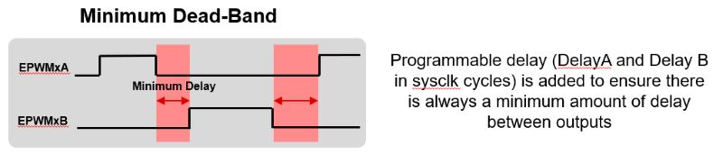
As PWM increases with more configurability, there is an illegal combo logic module which will take a set of unwanted combinations and output a certain state. In the figure below, the illegal combination logic is a truth table that will output EPWMA/EPWMB high or low based on the state of the inputs.
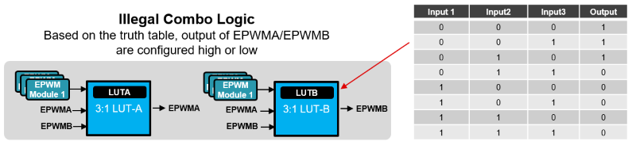
An example of an unwanted combination scenario for OUT could be EPWMxA_MINDB is high, EPWMxB_MINDB is low, and the ICL X-BAR output is high. The value of OUT could be encoded to be low. For an application this ensures certain combinations will be driven to a known state.
EPWM MINDB and ICL X-BARs#
The Minimum Dead-band (MINDB) and Illegal Combination Logic (ICL) XBARs are new to F28P65x. Their purpose is to expand functionality of the Minimum Dead-band and Illegal Combination Logic submodule of the EPWM by routing in signals from the diode emulation logic module, minimum dead-band module, and CLB. Their functionality is similar to the Input XBAR module, meaning only a single input to the XBARs can be routed to the output, unlike the Output XBAR for example, where multiple inputs can be combined as a logical OR and sent to the output.
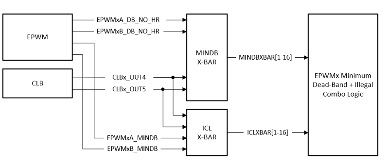
High Resolution PWM (HRPWM)#
The EPWM module is capable of significantly increasing its time resolution capabilities over the standard conventionally derived digital PWM. This is accomplished by adding 8-bit extensions to the counter-compare register (CMPxHR), time-base period register (TBPRDHR), and time-base phase register (TBPHSHR) to provide a finer time granularity for edge positioning control. This is known as high-resolution PWM (HRPWM) and it is based on micro edge positioner (MEP) technology.
MEP logic is capable of positioning an edge very finely by sub-dividing one coarse system clock of the conventional PWM generator with time step accuracy on the order of 150 picoseconds (see your device documentation for specifications). A self-checking software diagnostic (SFO Library) is used to determine if the MEP logic is running optimally, and it can calibrate the MEP logic under all operating conditions to account for variations caused by temperature, voltage, and process. HRPWM is typically used when the PWM resolution falls below approximately 9 or 10 bits.
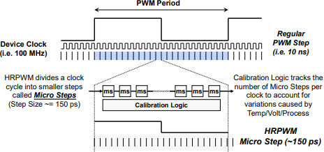
HRPWM in summary
Significantly increases the resolution of conventionally derived digital PWM
Adds 8-bit extensions to counter-compare registers (CMPxHR), time-base period register (TBPRDHR) and time-base phase register (TBPHSHR) for micro edge positioning (MEP) control
Typically used when PWM resolution falls below ~9-10 bits
Note that not all EPWM outputs support HRPWM feature. Please see your device datasheet for details.